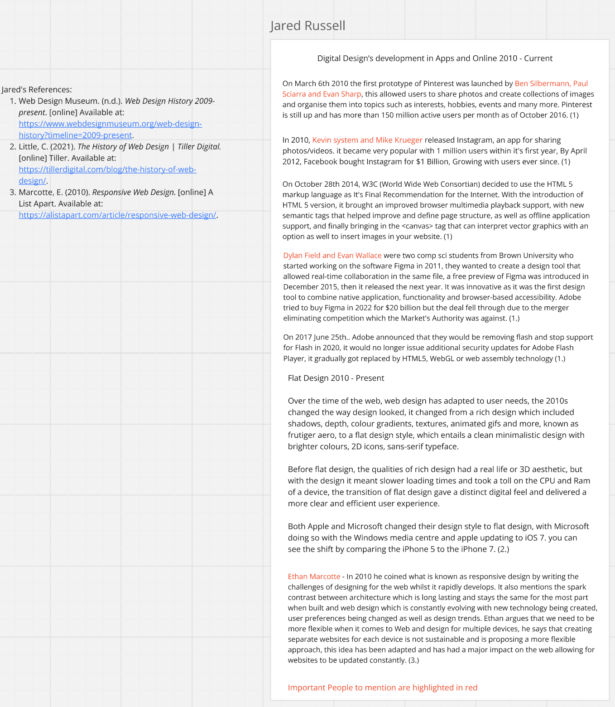
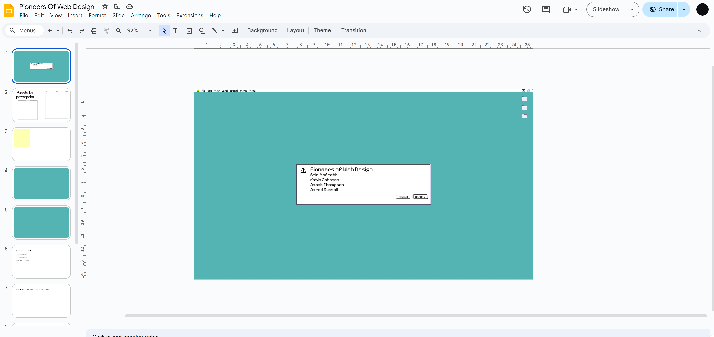
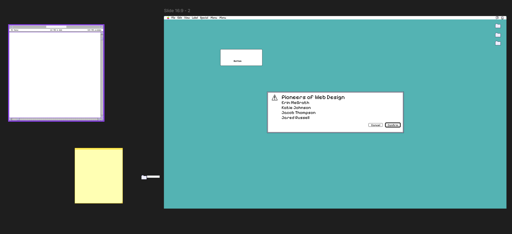
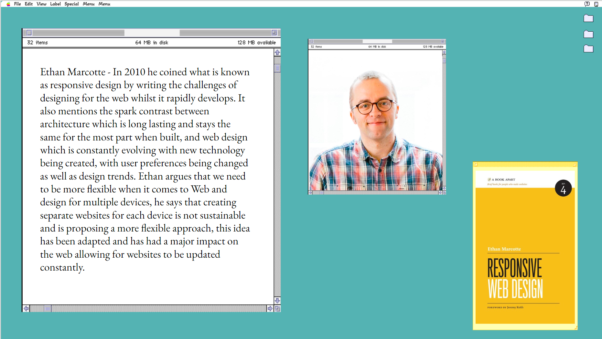
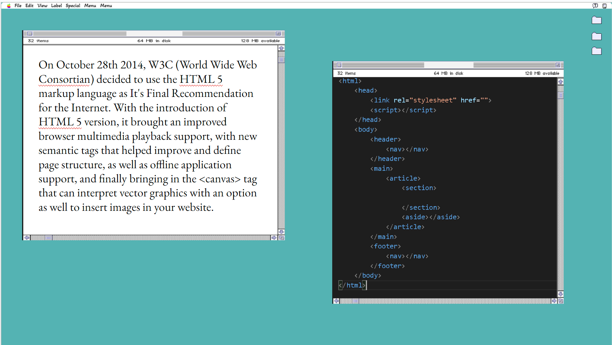

THE BRIEF
This was a group-based project where we developed a PowerPoint presentation on Pioneers of Web and Digital Design. We were placed in random teams and tasked with delivering a 10-minute presentation exploring the early innovators of digital media. Each member took on specific responsibilities to research, design, and present our chosen content.
LEADERSHIP & ORGANISATION
From the start, I took the lead in organising the project by setting up our Notion page, Miro board, Google Slides, and Slack group chat to keep communication consistent. I wrote the project brief, assigned topics, and linked resources so everyone understood their roles and deadlines. My focus was on keeping the group collaborative, structured, and prepared ahead of the presentation day.

RESEARCH & DESIGN DIRECTION
My research focused on how web and app design evolved through major trends—such as flat design, skeuomorphism, and the rise of responsive systems. I wanted our presentation visuals to echo these digital eras, so I pitched a few potential design themes:
- Flat iOS-inspired visuals
- Matrix-style coding aesthetic
- Frutiger Aero nostalgia
- Classic Mac OS (1990s)
The team agreed to use a Classic Mac OS 1990s-inspired interface. It captured the nostalgic charm of early computing and fit our subject perfectly. To complement the look, I suggested EB Garamond for typography—referencing Apple’s early brand tone while maintaining strong legibility for slides.


DEVELOPMENT & COLLABORATION
Using Figma, I developed the visual system for the slides—incorporating window frames, pixel icons, and system UI details. I restructured messy layouts, refined the slide hierarchy, and ensured our information flowed naturally from one speaker to the next. During rehearsals, I helped time our presentation, adjusted pacing, and gave feedback to keep the tone consistent.


PRESENTATION
We presented on 20/11/24, going second to last. I introduced the project and concluded the talk, speaking mostly off-script to keep the delivery engaging and conversational. While my pacing was slightly fast, it felt confident and natural. My teammates—Katie, Erin, and Jakob—all presented clearly, and our retro visuals helped hold audience attention throughout.


REFLECTION
The presentation was well received, with our lecturer Paul complimenting the Mac OS-inspired design and its readability. I was proud of how smoothly the team collaborated and how cohesive the final presentation felt.
From this project, I learned to:
- Lead a team effectively with clear communication
- Build structured and thematic slides using Figma
- Present confidently and adapt mid-presentation
- Balance historical context with creative direction
If I were to improve, I’d slow my pacing, dive deeper into the individual pioneers, and encourage earlier collaboration on slide content. Overall, this was a fun and rewarding project that strengthened my leadership, design, and presentation skills.